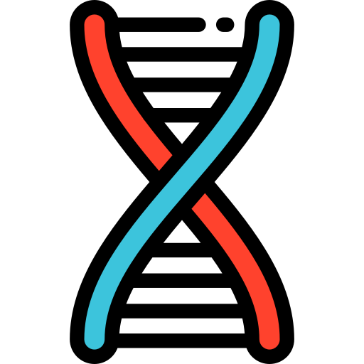

Features
Seq ships with a wide range of bio-specific and general-purpose language features, types and compiler optimizations.
Press ⇧ Shift+↵ Enter on any of the snippets below to try them!
Press ⇧ Shift+↵ Enter on any of the snippets below to try them!
Native sequence and k-mer types
Easy operations and transforms
Pipelines and seamless parallelism
Genomic pattern matching
Support for standard formats
C/C++ and Python interoperability